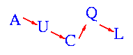

# Copyright (c) 1998. Curtis E. Dyreson. All rights reserved.
# yeah, blah blah standard disclaimer follows
# This software is covered under the general license and lack of
# warranty as stated in the installation kit. WARNING! DANGER WILL
# ROBINSON! USE AT YOUR OWN RISK!
use strict;
use CGI_Lite;
use SemiStructuredDB;
# use IO::Pipe;
use FileHandle;
use IPC::Open2;
my $cgi = new CGI_Lite;
my $ROOT = 'http://www.cs.usu.edu/cgi-bin/cgiwrap/~cdyreson/cgi-bin/perl/SemiStructured';
my $LESSONROOT = 'http://www.cs.usu.edu/~cdyreson/pub/AUCQL/';
my $tail =<<'TAIL';
AUCQL home |
documentation |
examples |
prototype
TAIL
# Build the header
print "Content-type: text/html", "\r\n\r\n";
my $data = $cgi->parse_form_data();
my ($tailVar) = '';
if (defined $$data{'tail'}) {
$tail = 'Return to Example';
$tailVar = '';
}
if (defined $$data{'query'}) { &query($data); }
else { &starter(); }
sub starter {
my $GUI = <<"GUI";
GUI
print <<"PAGE";
AUCQL Query Engine Demonstration

AUCQL Query Engine Demonstration
A Query Language for Semistructured Data with Metadata Properties